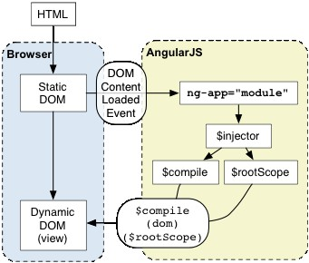
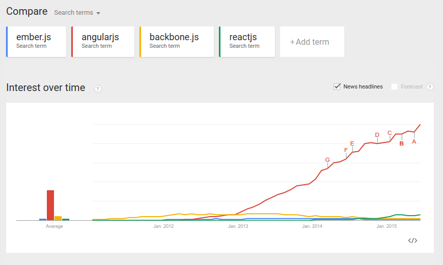

React, AngularJS & Co.
Welches Framework passt für welche Applikationen?
Evolution
AngularJS Features
- 2-way Data-Binding
- Templates
- MVC
- Dependency Injection
- Directives
- Testing
<div class="container" ng-app>
<form>
<h1>Hello {{name}}</h1>
Name: <input type="text" ng-model="name" ng-init="name='User'"/>
</form>
</div>
<script src="//ajax.googleapis.com/ajax/libs/angularjs/1.4.0/angular.js"></script>
Magic

App Start
AngularJS Pros
- Einfacher Einstieg
- Große Userbase
- Backed by Google
AngularJS Cons
- Gelerntes ist Angular-spezifisch
- Viel Magic
- 2-way Data Binding
- 2.0 - völliges Rewrite
React
Model
View
Controller
Model
View
Controller
Zustand → Darstellung
des gesamten UIvar Greeting = React.createClass({
render: function () {
return (
<div>
<h1>Hello User</h1>
</div>
);
}
});
React.render(<Greeting />, document.getElementById('container'));
JSX
<div class="greeting">
<h1>Hello User</h1>
</div>
React.createElement("div", {class: "greeting"},
React.createElement("h1", null, "Hello User")
)
Props
var Greeting = React.createClass({
render: function () {
return (
<div>
<h1>{this.props.text} User</h1>
</div>
);
}
});
React.render(<Greeting text="Grüezi" />, document.getElementById('container'));
Props: Nicht veränderbar von der Komponente selbst
State
var Greeting = React.createClass({
getInitialState: function () {
return {name: 'User'};
},
nameInputChange: function (e) {
this.setState({name: e.target.value});
},
render: function () {
return (
<div>
<h1>{this.props.text} {this.state.name}</h1>
Name: <input type="text"
onChange={this.nameInputChange}
value={this.state.name} />
</div>
);
}
});
React.render(<Greeting text="Grüezi" />, document.getElementById('container'));
React
- Kein MV*-Framework: View Layer
- Keine Template-Engine
- Vergleichbar mit Angular Directives
Eigenschaften
- Re-Rendering statt Event- und Data-binding
- Virtual DOM: Schnelles Rendern
- Komponenten basiert
React Pros
- Schnell
- Isolation durch Komponenten
- Nur View - aber keine DSL
- DOM Abstraktion
- Server-side rendering
React Cons
- Nur View
- Groß: min + gzip 36kb
- HTML in JS
Flux

Unidirektionaler Data-Flow statt MVC
& Co.
Backbone.js
- MV-ish JS Referenz
- Problematisch: Interkativität
- Stable
Ember.js
- Stark 'Opinionated'
- Gutes Tooling
- Groß und 'langsam'
Ampersand.js
- MV-ish: Backbone ähnlich
- Modular (Browserfiy)
- Neu und weniger erpropt
mithril
- Minimalistisch: 16 Methoden
- MV-ish + React like rendering
- Server-side rendering
Framework Auswahl
Google Trends
Metriken
| Metric | ANGULARJS | BACKBONE.JS | EMBER.JS | REACT |
|---|---|---|---|---|
| Stars on Github | 40k | 22k | 14k | 23k |
| StackOverflow Questions | 103k | 18.1k | 15.5k | 3.5k |
| YouTube Results | ~95k | ~12k | ~8k | ~5k |
| GitHub Contributors | 1266 | 265 | 500 | 437 |
Wie können wir, bei dem sich schnell entwickelnden Web, sicher sein die richtigen Tools zu wählen?
Gar nicht!
Was wissen wir?
Die einzige Konstante im Universum ist die Veränderung.
Optimize for Change
Wie?
Kein Framework Fanatismus
Komplexität verringern
Modularisierung
Framework → App
Struktur
Patterns
Menschen
Applikationen
Runtime
- Native Web-Apps (Single-Page-Apps)
- Desktop
- Mobile
- Server-renderd Web-Apps
Welches Framework passt für welche Applikationen?
Welches Framework passt für welchen Entwickler?
- Backend-Dev: Ember.js, AngularJS
- Frontend-Guy: React+Flux/Whatever, mithril